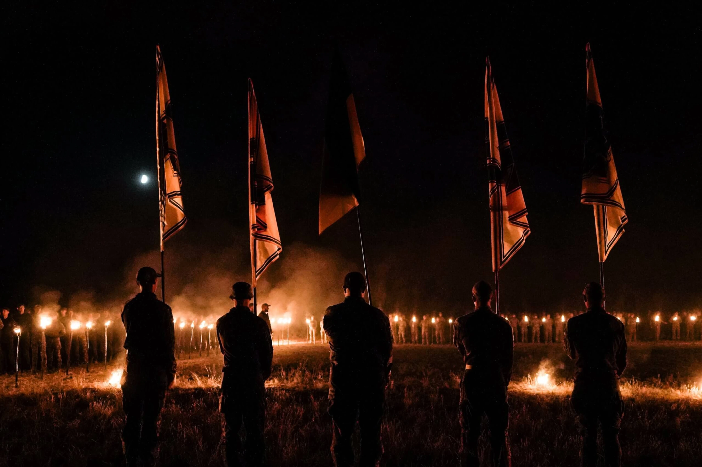

Військо
Досліджуємо військові ритуали й традиції та шукаємо способи зберігати їхню тяглість у сучасному українському війську. Працюємо над створенням церемоній прощання з військовослужбовцями, які можуть бути адаптовані та впроваджені в громадах по всій Україні.

Ми досліджуємо ритуали з армій різних країн – від сигналу «Last Post», що з 1928 року щовечора звучить у бельгійському Іпрі, до канадського «Шосе героїв», де тисячі людей виходять на мости, коли повз проїжджає колона із загиблим.
Ці практики показують, що робить прощання гідним: тиша, повторюваність, участь побратимів і громади. На цій основі ми шукаємо форми, близькі українському війську.
Щойно дослідження буде готове, ми опублікуємо його тут.